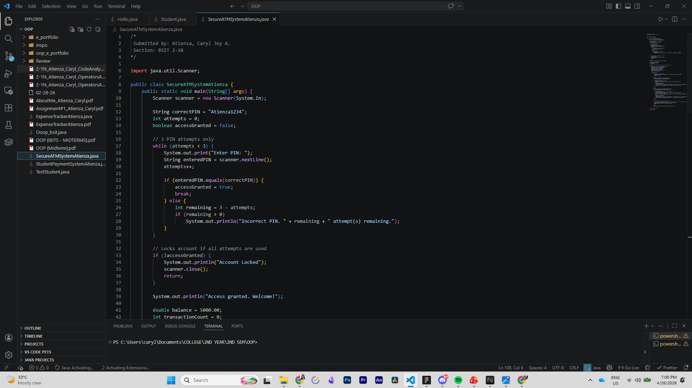
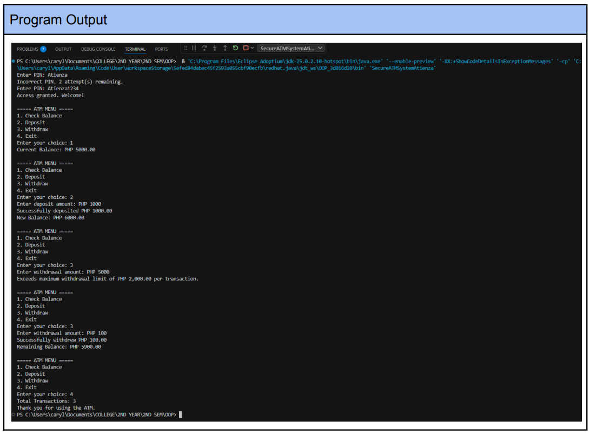

Creating an ATM with transaction counter using Java.
Overview
This activity focuses on implementing Java decision structures and loops to build a functional ATM system with a PIN-security feature. It requires the practical application of switch statements, nested if-else logic, and do-while loops to handle user authentication and transaction processing.
Output


Reflection
Building this ATM system was a solid exercise in managing program flow, especially with the added layer of security through the PIN-retry logic. It was interesting to see how nested if-else statements and while loops work together to create a realistic authentication process, ensuring the account locks after three failed attempts. Managing the transaction counter and enforcing withdrawal limits like the 2,000-peso cap really highlighted the importance of data validation and robust error handling to prevent runtime issues. Transitioning from my background in C, I’m finding that using Java’s switch statements and do-while loops makes the menu-driven architecture feel much more organized and scalable. Verifying that the code accurately tracks balance changes and repeats until the user exits was a great way to reinforce the "write once, run anywhere" mindset in a functional, real-world scenario.